The Git Status page provides a summary of the current state of a Git clone associated with your Orion account. This page shows changes in your working tree, staged changes that are ready to commit, and a summary of the current contents of the local and remote tracking branches. The title area indicates the repository and branch name you are currently viewing. Commands available on staged or unstaged files are shown to the right of each file when you hover over it.
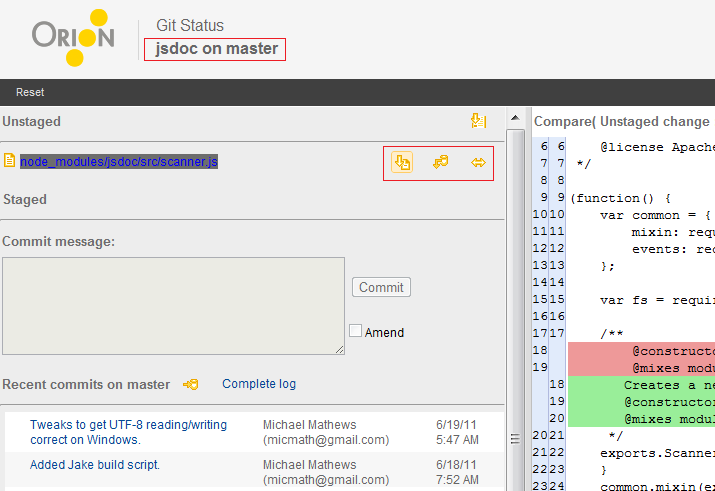
Excluding the conflicting cases, there are three types of changes: adding, changing and deleting. The types of changes are indicated by icons on the left of the files.
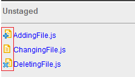
Click any staged or unstaged change to open a comparison between the working copy and the state of that file in the most recent commit. You can also open a separate Compare page by clicking the Side by side compare button to the right of the file name. The compare page allows you to merge changes or perform further edits on your uncommitted changes.
Before you can commit a file in Git, it must be added to your local index. This process is called staging, or Git add.
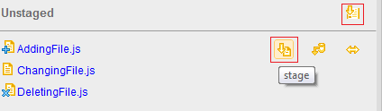
Click on the action to stage the change. The file will be moved to the Staged area.
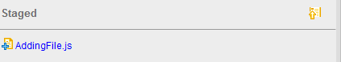
From the top-right corner of the unstaged area, you can also click on the stage all action to stage all selected changes.
Let's say you have made a change in your working copy that you want to discard. You can discard a change by performing a checkout of the file contents from your local index.
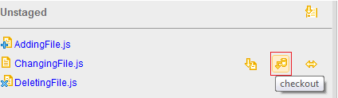
Clicking on the action pops up the confirmation dialog. Click OK to restore the change from the index or Cancel to cancel the action.
You can also discard a group of changes. From the top-right corner of the unstaged area, you can click on the Checkout action to check out all selected changes.

You can also reset all the unstaged and staged changes by clicking on the Reset from the page action.
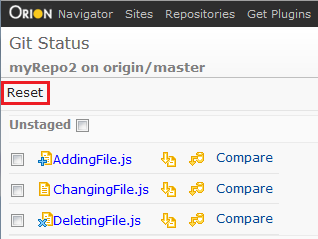
A confirmation dialog pops up when you click on the action. Click OK to reset the changes from the index or Cancel to cancel the action.

If you decide you don't want to commit a change, but want to continue working on it, you can remove it from your index by unstaging it. From the top-right corner of the staged area, you can click on the unstage all action to unstage all selected changes or just unstage changes one by one.
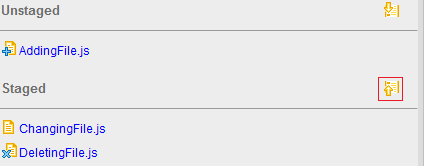
Once changes are staged, you can use actions in the commit area to commit all staged changes. The commit button is disabled if there is no message in the commit message, so you have to input the message before you commit the changes. The Amend check-box is used to amend the last commit.
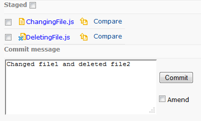
There are 2 recent commits areas in the git status page. The top one represents the recent commits from the local branch while the bottom one represents the remote tracking branch. Both areas have 5 most recent commits respectively. You can perform fetch, merge and push actions here, which are also available in the Log page. Clicking on the Complete log navigates to the Log page with local or remote mode. There you can refer to the details of the commits.
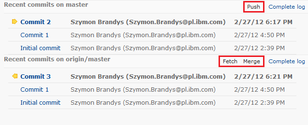
Click on the first action icon Fetch from the remote tracking branch area to fetch all the recent commits. All the incoming changes are highlighted as shown above.
Click on the second action icon Merge from the remote tracking branch area to merge all the recent commits to the local branch.
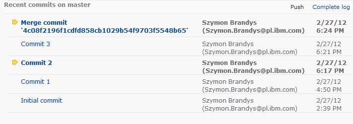
Once commits from remote branch are merged, click on the action icon Push from the local branch area to push all the recent commits to the remote tracking branch. The recent commits on the 2 areas are synchronized as shown below.
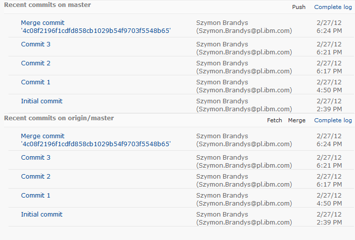
This document is maintained in a collaborative wiki. If you wish to update or modify this document please visit http://wiki.eclipse.org/Orion/Documentation/User_Guide/Reference/Git_Status_page